ggplot(data, aes(x=x, y=y, col=col, fill=fill, group=group)) + geom_THING() 2 Visualizing Data
Visualizing your data is hands down the most important thing you can learn to do. There are links to additional resources at the end of this document for additional learning.
There are two audiences in mind when creating data visualizations:
- For your eyes only (FYEO). These are quick and dirty plots, without annotation. Meant to be looked at once or twice.
- To share with others. These need to completely stand on their own. Axes labels, titles, colors as needed, possibly captions.
You will see, and slowly learn, how to add these annotations and how to clean up your graphics to make them sharable. ggplot2 already does a lot of this work for you.
We will also use the two most common methods used to create plots. 1) Base graphics, 2) the ggplot2 package. Each have their own advantages and disadvantages. If you have not done so already, go ahead and install the ggplot2 package now.
For almost every plot discussed we will create two types of plots
- FYEO - using base graphics. (Base == Comes with R) Very powerful, but can be technical.
- FYEO - using
ggplot2. Each have their own advantages and disadvantages.
As time permits I will update each section with a third type of plot -
- Sharable - Contains all bells and whistles needed to make it presentable to others.
Your task, should you choose to accept, is to follow along through this tutorial and at each step try to reproduce the plot shown. You can accomplish this by simply copying and pasting the syntax into a new R code (or R Markdown) document.
2.1 The syntax of ggplot
The reason we use the functions in ggplot2 is for consistency in the structure of it’s arguments. Here is a bare bones generic plotting function:
2.1.1 Required arguments
data: What data set is this plot using? This is ALWAYS the first argument.aes(): This is the aestetics of the plot. What’s variable is on the x, what is on the y? Do you want to color by another variable, perhaps fill some box by the value of another variable, or group by a variable.geom_THING(): Every plot has to have a geometry. What is the shape of the thing you want to plot? Do you want to plot points - usegeom_points(). Want to connect those points with a line? Usegeom_lines(). We will see many varieties in this lab.
2.1.2 Optional but helpful arguments
ggtitle: This is the overall plot titlexlab()andylab()axis titles.- scale_xy_blah to extend limits
- scale_fill_blah to specifying a fixed color, and change auto legend title
- themes
For a full , and comprehensive tutorial and reference guide on how to do nearly anything in ggplot – this is by far my favorite reference http://www.cookbook-r.com/Graphs/ I reference things in there (like how to remove or change the title of a legend) constantly.
2.2 The Data
We will use a subset of the diamonds dataset that comes with the ggplot2 package. This dataset contains the prices and other attributes of almost 54,000 diamonds. Review ?diamonds to learn about the variables we will be using.
library(ggplot2)
data("diamonds")
set.seed(1410) # Make the sample reproducible
dsmall <- diamonds[sample(nrow(diamonds), 1000), ]2.3 Univariate Visualizations
2.3.1 Categorical variables
Both Nominal and Ordinal data types can be visualized using the same methods: tables, barcharts and pie charts.
2.3.1.1 Tables
Tables are the most common way to get summary statistics of a categorical variable. The table() function produces a frequency table, where each entry represents the number of records in the data set holding the corresponding labeled value.
table(dsmall$cut)
Fair Good Very Good Premium Ideal
34 99 220 257 390 There are 27 Fair quality diamonds, 83 good quality and 387 Ideal quality diamonds in this sample.
2.3.1.2 Barcharts / Barplots
A Barchart or barplot takes these frequencies, and draws bars along the X-axis where the height of the bars is determined by the frequencies seen in the table.
base To create a barplot/barchart in base graphics requires the data to be in summarized in a table form first. Then the result of the table is plotted. The first argument is the table to be plotted, the main argument controls the title.
dc <- table(dsmall$cut)
barplot(dc, main="Barchart using base graphics")ggplot The geometry needed to draw a barchart in ggplot is geom_bar().
ggplot(dsmall, aes(x=cut)) + geom_bar()pretty The biggest addition to a barchart is the numbers on top of the bars. This isn’t mandatory, but it does make it nice.
ggplot(dsmall, aes(x=cut)) + theme_bw() +
geom_bar(aes(y = ..count..)) + ggtitle("Frequnency of diamonds by cut type") +
geom_text(aes(y=..count.. + 10, label=..count..), stat='count', size = 5)Warning: The dot-dot notation (`..count..`) was deprecated in ggplot2 3.4.0.
ℹ Please use `after_stat(count)` instead.2.3.1.3 Plotting Proportions
Often you don’t want to compare counts but percents. To accomplish this, we have to aggregate the data to calculate the proportions first, then plot the aggregated data using geom_col to create the columns.
cut.props <- data.frame(prop.table(table(dsmall$cut)))
cut.props # what does this data look like? Var1 Freq
1 Fair 0.034
2 Good 0.099
3 Very Good 0.220
4 Premium 0.257
5 Ideal 0.390ggplot(cut.props, aes(x=Var1, y=Freq)) + geom_col() +
ylab("Proportion") + xlab("Cut type") +
ggtitle("Proportion of diamonds by cut type")2.3.1.4 Cleveland Dot Plots
Another way to visualize categorical data that takes up less ink than bars is a Cleveland dot plot. Here again we are plotting summary data instead of the raw data. This uses the geom_segment that draws the lines from x=0 to the value of the proportion (named Freq because of the way data.frame works).
ggplot(cut.props, aes(x=Freq, y=Var1)) +
geom_point(size = 3) + xlab("Proportion of diamonds") +
theme_bw() + ylab("Cut Type") +
geom_segment(aes(x=0, xend=Freq, y=Var1, yend=Var1), color='grey50')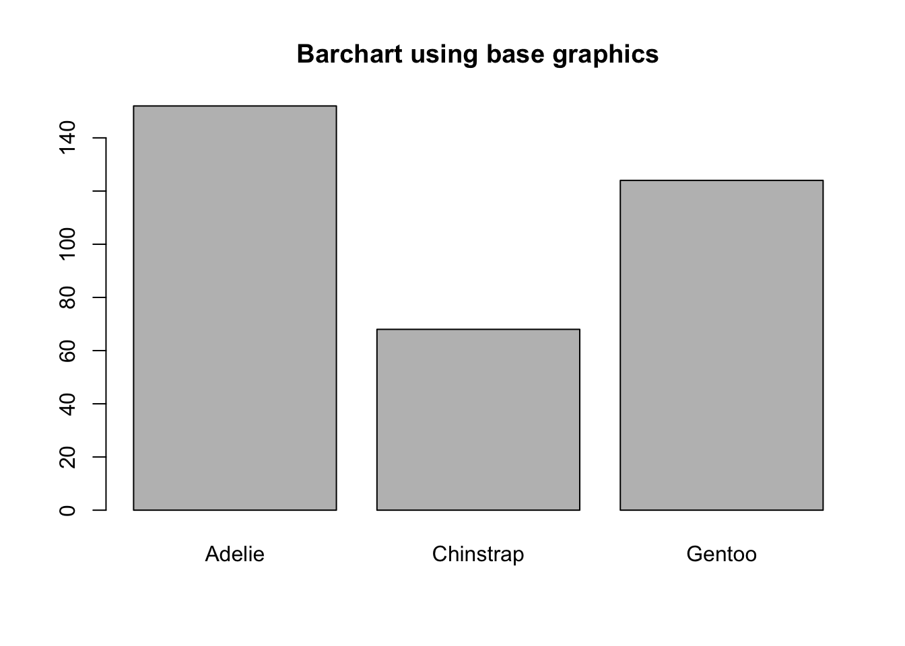
2.3.1.5 Pie Chart
Just like barplot(), pie() takes a table object as it’s argument.
base
dc <- table(dsmall$cut)
pie(dc)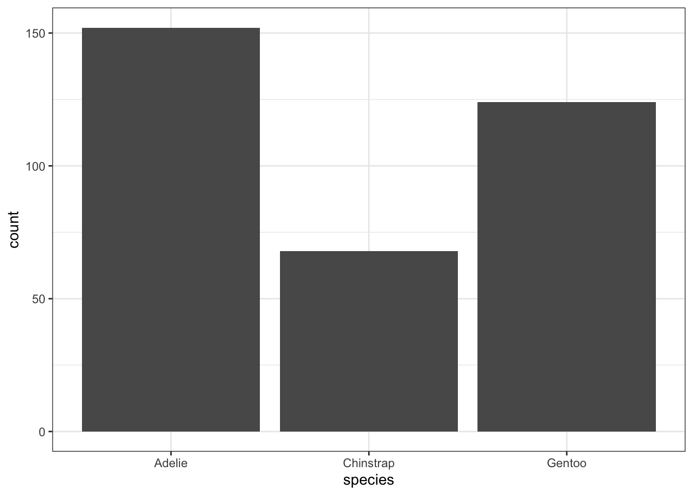
Pie charts are my least favorite plotting type. Human eyeballs can’t distinguish between angles as well as we can with heights. A mandatory piece needed to make the wedges readable is to add the percentages of each wedge.
pie(dc, labels = paste0(names(dc), ' (', prop.table(dc)*100, "%)"))
ggplot
And here I thought pie charts couldn’t get worse… i’m not a fan at all of the ggplot version. So i’m not even going to show it. Here’s a link to another great tutorial that does show you how to make one.
http://www.sthda.com/english/wiki/ggplot2-pie-chart-quick-start-guide-r-software-and-data-visualization
However – Never say never. Here’s an example of a good use of pie charts. http://www.storytellingwithdata.com/blog/2019/8/8/forty-five-pie-charts-never-say-never
2.3.1.6 Waffle Chart
This type of chart is not natively found in the ggplot2 package, but it’s own waffle package. These are great for infographics.
Reference: https://www.r-bloggers.com/making-waffle-charts-in-r-with-the-new-waffle-package/
library(waffle)
waffle(dc/10, rows=5, size=0.5,
title="Cut quality of diamond",
xlab="1 square == 10 diamonds")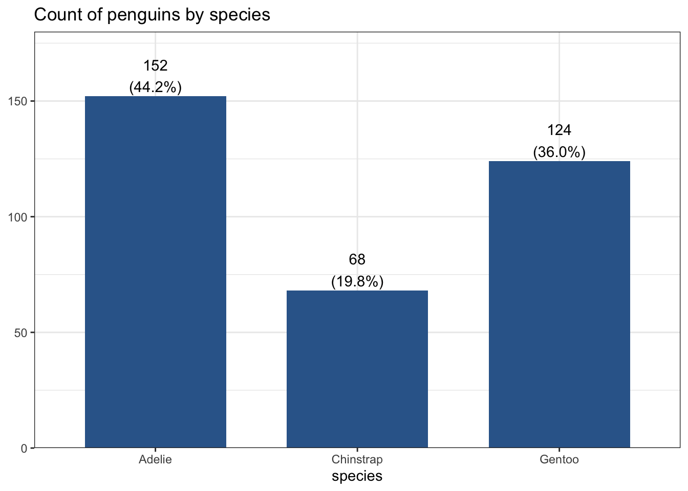
2.3.2 Continuous Measures
Here we can look at the price, carat, and depth of the diamonds.
2.3.2.1 Dotplot
plot(dsmall$depth)The base function plot() creates a dotplot for a continuous variable. The value of the variable is plotted on the y axis, and the index, or row number, is plotted on the x axis. This gives you a nice, quick way to see the values of the data.
Often you are not interested in the individual values of each data point, but the distribution of the data. In other words, where is the majority of the data? Does it look symmetric around some central point? Around what values do the bulk of the data lie?
2.3.2.2 Histograms
Rather than showing the value of each observation, we prefer to think of the value as belonging to a . The height of the bars in a histogram display the frequency of values that fall into those of those bins. For example if we cut the poverty rates into 7 bins of equal width, the frequency table would look like this:
table(cut(dsmall$depth, 7))
(55.3,57.6] (57.6,59.8] (59.8,62.1] (62.1,64.4] (64.4,66.7] (66.7,68.9]
6 79 536 351 23 3
(68.9,71.2]
2 In a histogram, the binned counts are plotted as bars into a histogram. Note that the x-axis is continuous, so the bars touch. This is unlike the barchart that has a categorical x-axis, and vertical bars that are separated.
base You can make a histogram in base graphics super easy.
hist(dsmall$depth)
And it doesn’t take too much to clean it up. Here you can specify the number of bins by specifying how many breaks should be made in the data (the number of breaks controls the number of bins, and bin width) and use col for the fill color.
hist(dsmall$depth, xlab="depth", main="Histogram of diamond depth", col="cyan", breaks=20)
ggplot
ggplot(dsmall, aes(x=depth)) + geom_histogram(binwidth = 2.2)
The binwidth here is set by looking at the cut points above that were used to create 7 bins. Notice that darkgrey is the default fill color, but makes it hard to differentiate between the bars. So we’ll make the outline black using colour, and fill the bars with white.
ggplot(dsmall, aes(x=depth)) + geom_histogram(colour="black", fill="white") +
ggtitle("Distribution of diamond depth")`stat_bin()` using `bins = 30`. Pick better value with `binwidth`.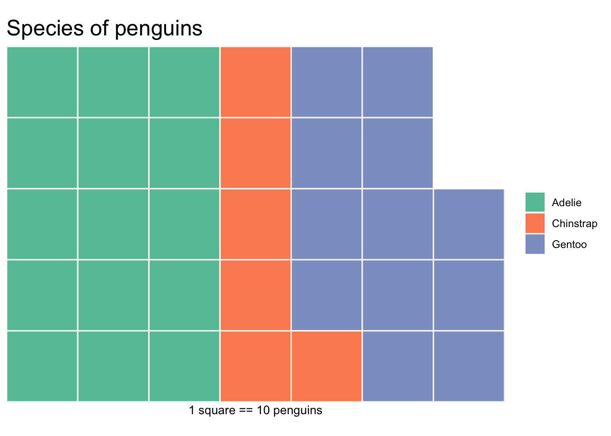
Note I did not specify the binwidth argument here. The size of the bins can hide features from your graph, the default value for ggplot2 is range/30 and usually is a good choice.
2.3.2.3 Density plots
To get a better idea of the true shape of the distribution we can “smooth” out the bins and create what’s called a density plot or curve. Notice that the shape of this distribution curve is much more… “wigglier” than the histogram may have implied.
base
plot(density(dsmall$depth))
Awesome title huh? (NOT)
ggplot2
ggplot(dsmall, aes(x=depth)) + geom_density()
2.3.2.4 Histograms + density
Often is is more helpful to have the density (or kernel density) plot on top of a histogram plot.
Base Since the height of the bars in a histogram default to showing the frequency of records in the data set within that bin, we need to 1) scale the height so that it’s a relative frequency, and then use the lines() function to add a density() line on top.
hist(dsmall$depth, prob=TRUE)
lines(density(dsmall$depth), col="blue")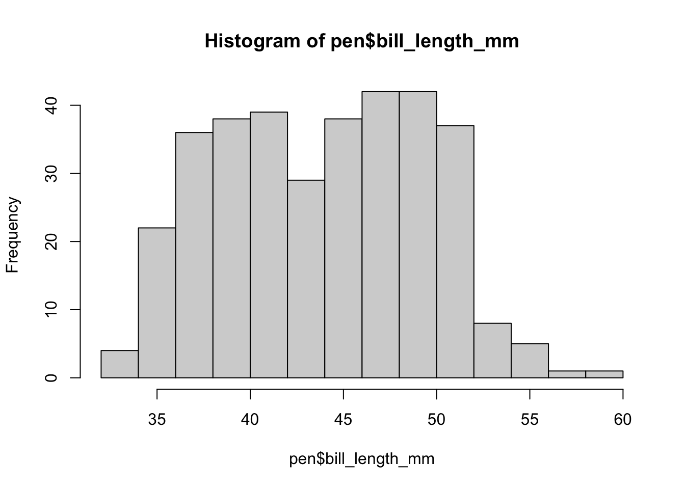
ggplot The syntax starts the same, we’ll add a new geom, geom_density and color the line blue. Then we add the histogram geom using geom_histogram but must specify that the y axis should be on the density, not frequency, scale. Note that this has to go inside the aesthetic statement aes(). I’m also going to get rid of the fill by using NA so it doesn’t plot over the density line.
ggplot(dsmall, aes(x=depth)) + geom_density(col="blue") +
geom_histogram(aes(y=..density..), colour="black", fill=NA)`stat_bin()` using `bins = 30`. Pick better value with `binwidth`.
2.3.2.5 Boxplots
Another very common way to visualize the distribution of a continuous variable is using a boxplot. Boxplots are useful for quickly identifying where the bulk of your data lie. R specifically draws a “modified” boxplot where values that are considered outliers are plotted as dots.
base
boxplot(dsmall$depth)
Notice that the only axis labeled is the y=axis. Like a dotplot the x axis, or “width”, of the boxplot is meaningless here. We can make the axis more readable by flipping the plot on it’s side.
boxplot(dsmall$depth, horizontal = TRUE, main="Distribution of diamond prices", xlab="Dollars")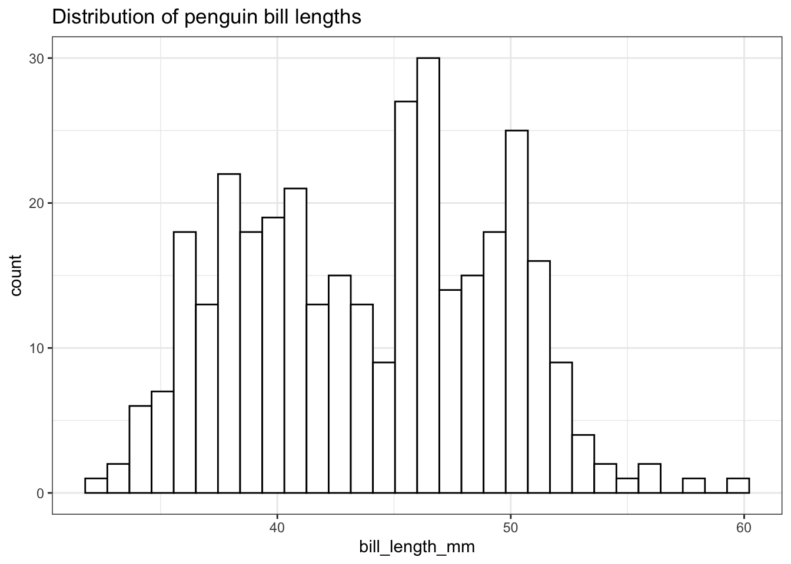
Horizontal is a bit easier to read in my opinion.
ggplot What about ggplot? ggplot doesn’t really like to do univariate boxplots. We can get around that by specifying that we want the box placed at a specific x value.
ggplot(dsmall, aes(x=1, y=depth)) + geom_boxplot()
To flip it horizontal you may think to simply swap x and y? Good thinking. Of course it wouldn’t be that easy. So let’s just flip the whole darned plot on it’s coordinate axis.
ggplot(dsmall, aes(x=1, y=depth)) + geom_boxplot() + coord_flip()
2.3.2.6 Violin plots
ggplot(dsmall, aes(x=1, y=depth)) + geom_violin()
2.3.2.7 Boxplot + Violin plots
Overlaying a boxplot and a violin plot serves a similar purpose to Histograms + Density plots.
ggplot(dsmall, aes(x=1, y=depth)) + geom_violin() + geom_boxplot()Better appearance - different levels of transparency of the box and violin.
ggplot(dsmall, aes(x=1, y=depth)) + xlab("") + theme_bw() +
geom_violin(fill="blue", alpha=.1) +
geom_boxplot(fill="blue", alpha=.5, width=.2) +
theme(axis.title.x=element_blank(),
axis.text.x=element_blank(),
axis.ticks.x=element_blank())
2.3.2.8 Normal QQ plots
The last useful plot that we will do on a single continuous variable is to assess the normality of the distribution. Basically how close the data follows a normal distribution.
base
qqnorm(dsmall$price)
qqline(dsmall$price, col="red")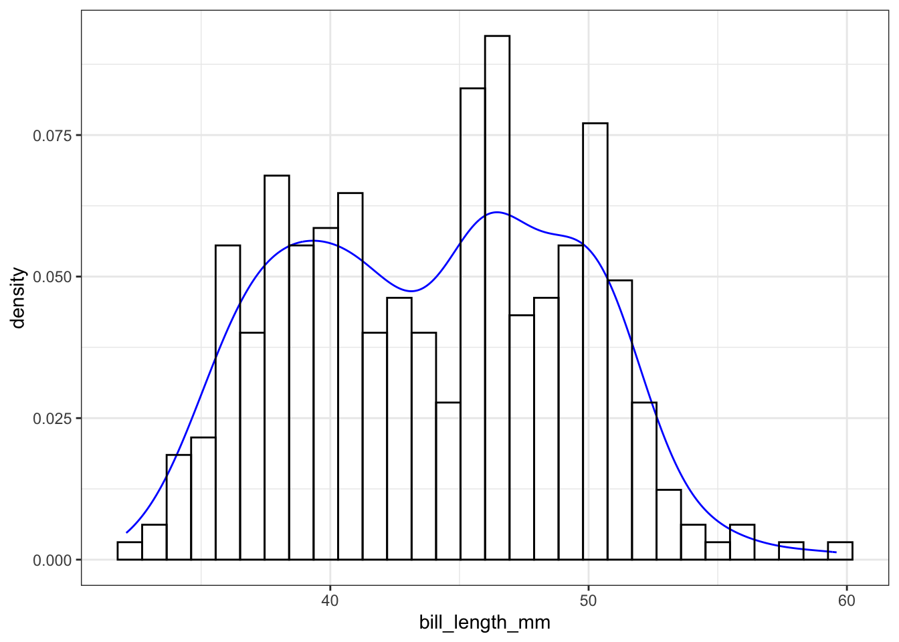
The line I make red because it is a reference line. The closer the points are to following this line, the more “normal” the shape of the distribution is. Price has some pretty strong deviation away from that line. Below I have plotted what a normal distribution looks like as an example of a “perfect” fit.
z <- rnorm(1000)
qqnorm(z)
qqline(z, col="blue")
ggplot qq (or qnorm) plots specifically plot the data against a theoretical distribution. That means in the aes() aesthetic argument we don’t specify either x or y, but instead the sample= is the variable we want to plot.
ggplot(dsmall, aes(sample=price)) + stat_qq()
Additional references on making qqplots in ggplot: http://www.sthda.com/english/wiki/ggplot2-qq-plot-quantile-quantile-graph-quick-start-guide-r-software-and-data-visualization
2.4 Bivariate Visualizations
2.4.1 Categorical v. Categorical
2.4.1.1 Two-way Frequency tables
Cross-tabs, cross-tabulations and two-way tables (all the same thing, different names) can be created by using the table() function.
The frequency table is constructed using the table() function.
table(dsmall$cut, dsmall$color)
D E F G H I J
Fair 5 6 7 4 5 4 3
Good 18 23 11 16 17 7 7
Very Good 26 37 46 40 33 25 13
Premium 34 53 43 49 41 24 13
Ideal 54 63 79 92 53 34 15There are 4 Fair diamonds with color D, and 21 Ideal quality diamonds with color J.
2.4.1.2 Two-way Proprtion tables
Choose your percentages depending on your research question. What are you wanting to compare?
Best practices:
- Explanatory variable on the rows
- Response variable on the columns
- Calculate row %’s as the % of the response for each explanatory group.
Here are demonstrations of how the interpretation of the percents change depending on what the denominator is.
Cell proportions
Wrapping prop.table() around a table gives you the cell proportions.
prop.table(table(dsmall$cut, dsmall$color))
D E F G H I J
Fair 0.005 0.006 0.007 0.004 0.005 0.004 0.003
Good 0.018 0.023 0.011 0.016 0.017 0.007 0.007
Very Good 0.026 0.037 0.046 0.040 0.033 0.025 0.013
Premium 0.034 0.053 0.043 0.049 0.041 0.024 0.013
Ideal 0.054 0.063 0.079 0.092 0.053 0.034 0.0150.4% of all diamonds are D color and Fair cut, 2.1% are J color and Ideal cut.
Row proportions
To get the row proportions, you specify margin=1. The percentages now add up to 1 across the rows.
round(prop.table(table(dsmall$cut, dsmall$color), margin=1),3)
D E F G H I J
Fair 0.147 0.176 0.206 0.118 0.147 0.118 0.088
Good 0.182 0.232 0.111 0.162 0.172 0.071 0.071
Very Good 0.118 0.168 0.209 0.182 0.150 0.114 0.059
Premium 0.132 0.206 0.167 0.191 0.160 0.093 0.051
Ideal 0.138 0.162 0.203 0.236 0.136 0.087 0.03814.8% of all Fair quality diamonds are color D. 5.4% of all Ideal quality diamonds have color J.
Column proportions
To get the column proportions, you specify margin=2. The percentages now add up to 1 down the columns.
round(prop.table(table(dsmall$cut, dsmall$color), margin=2),3)
D E F G H I J
Fair 0.036 0.033 0.038 0.020 0.034 0.043 0.059
Good 0.131 0.126 0.059 0.080 0.114 0.074 0.137
Very Good 0.190 0.203 0.247 0.199 0.221 0.266 0.255
Premium 0.248 0.291 0.231 0.244 0.275 0.255 0.255
Ideal 0.394 0.346 0.425 0.458 0.356 0.362 0.2942.7% of all D color diamonds are of Fair quality. 44.7% of all J color diamonds are of Ideal quality.
2.4.1.3 Grouped bar charts
To compare proportions of one categorical variable within the same level of another, is to use grouped barcharts.
base As before, the object to be plotted needs to be the result of a table.
cc <- table(dsmall$cut, dsmall$color)
barplot(cc)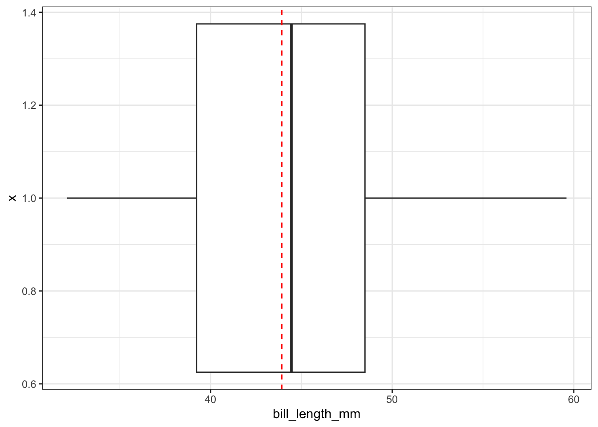
Stacked bars can be difficult to interpret, and very difficult to compare values between groups. A side by side barchart is preferable. The beside=TRUE is what controls the placement of the bars.
barplot(cc, main="quick side by side barchart using base graphics", beside=TRUE)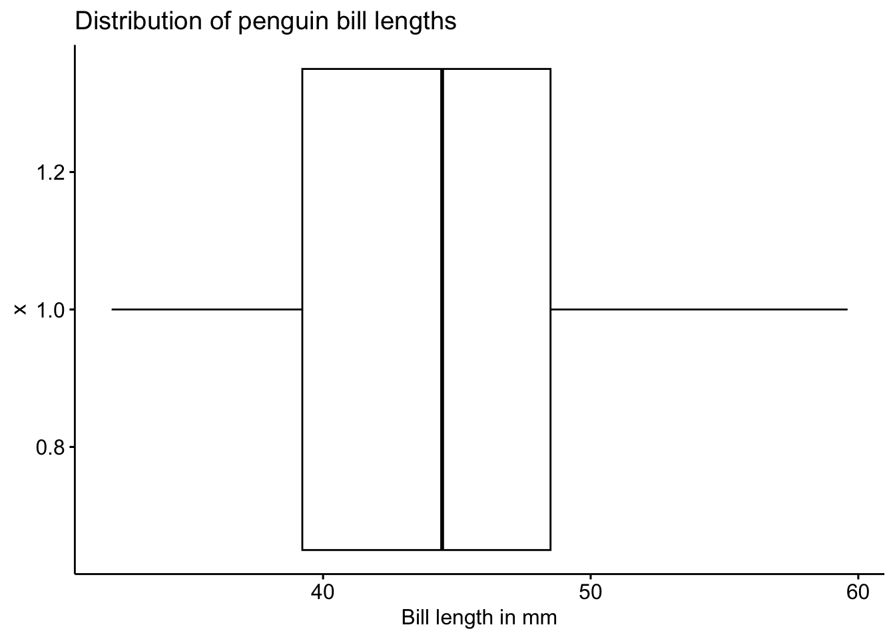
ggplot Again plot the cut on the x axis, but then fill using the second categorical variable. This has the effect of visualizing the row percents from the table above. The percent of color, within each type of cut.
ggplot(dsmall, aes(x=cut, fill=color)) + geom_bar()
Again the default is a stacked barchart. So we just specify position=dodge to put the bars side by side.
ggplot(dsmall, aes(x=cut, fill=color)) + geom_bar(position = "dodge")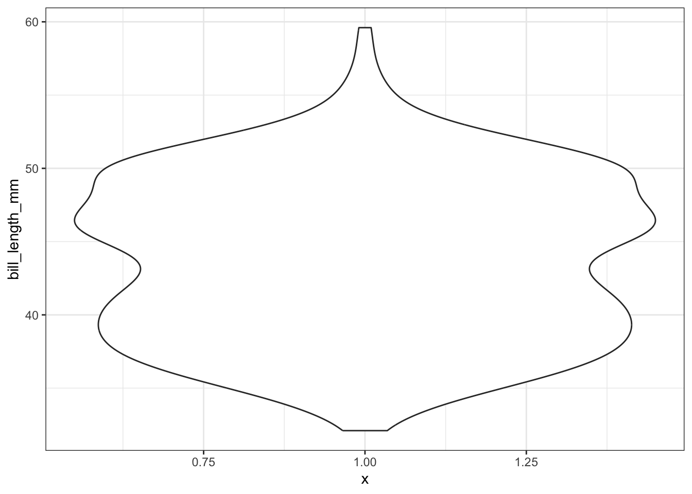
And look, an automatic legend. What if I wanted to better compare cut within color group? This is the column percentages. Just switch which variable is the x axis and which one is used to fill the colors!
ggplot(dsmall, aes(x=color, fill=cut)) + geom_bar(position = "dodge")
For more than 2 colors I do not recommend choosing the colors yourself. I know little about color theory so I use the built-in color palettes. Here is a great cheatsheet about using color palettes.
And this easy change is why we love ggplot2.
2.4.2 Grouped bar charts with percentages
Not as easy as one would hope, but the solution is to calculate the desired percentages first and then plot the summary data using either geom_bar(stat='identity') or geom_col().
library(dplyr)
Attaching package: 'dplyr'The following objects are masked from 'package:stats':
filter, lagThe following objects are masked from 'package:base':
intersect, setdiff, setequal, unioncalc.props <- diamonds %>% group_by(color, cut) %>%
summarise(count=n()) %>%
mutate(pct=round(count/sum(count),3))`summarise()` has grouped output by 'color'. You can override using the
`.groups` argument.calc.props# A tibble: 35 × 4
# Groups: color [7]
color cut count pct
<ord> <ord> <int> <dbl>
1 D Fair 163 0.024
2 D Good 662 0.098
3 D Very Good 1513 0.223
4 D Premium 1603 0.237
5 D Ideal 2834 0.418
6 E Fair 224 0.023
7 E Good 933 0.095
8 E Very Good 2400 0.245
9 E Premium 2337 0.239
10 E Ideal 3903 0.398
# ℹ 25 more rowsSince we’re plotting summary data, the height of the bars is specified using y=pct.
ggplot(calc.props, aes(x=color, fill=cut, y=pct)) +
geom_col(position="dodge") + theme_bw() 
Now set some options to the y axis using scale_y_continuous() to make the graph more accurate and readable. The labels=percent comes from the scales package.
library(scales)
ggplot(calc.props, aes(x=color, fill=cut, y=pct)) +
geom_col(position="dodge") + theme_bw() +
scale_y_continuous(limits=c(0,1), labels=percent)2.4.2.1 sjPlot
sjPlot does a very nice job of being able to cleanly show not only n’s but percents.
library(sjPlot)Learn more about sjPlot with 'browseVignettes("sjPlot")'.plot_xtab(dsmall$color, dsmall$cut, margin="row", coord.flip = TRUE) 
2.4.2.2 Mosaic plots
But what if you want to know how two categorical variables are related and you don’t want to look at two different barplots? Mosaic plots are a way to visualize the proportions in a table. So here’s the two-way table we’ll be plotting.
table(dsmall$cut, dsmall$color)
D E F G H I J
Fair 5 6 7 4 5 4 3
Good 18 23 11 16 17 7 7
Very Good 26 37 46 40 33 25 13
Premium 34 53 43 49 41 24 13
Ideal 54 63 79 92 53 34 15The syntax for a mosaic plot uses model notation, which is basically y ~ x where the ~ is read as “twiddle” or “tilde”. It’s to the left of your 1 key.
mosaicplot(cut~color, data=dsmall)Helpful, ish. Here are two very useful options. In reverse obviousness, color applies shades of gray to one of the factor levels, and shade applies a color gradient scale to the cells in order of what is less than expected (red) to what is more than expected (blue) if these two factors were completely independent.
par(mfrow=c(1,2)) # display the plots in 1 row and 2 columns
mosaicplot(cut~color, data=dsmall, color=TRUE)
mosaicplot(cut~color, data=dsmall, shade=TRUE)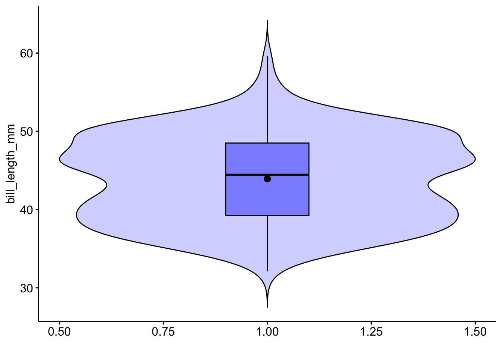
For example, there are fewer ‘Very Good’ cut diamonds that are color ‘G’, and fewer ‘Premium’ cut diamonds that are color ‘H’. As you can see, knowing what your data means when trying to interpret what the plots are telling you is essential.
That’s about all the ways you can plot categorical variables. If you are wondering why there was no 3D barcharts demonstrated see
here, here, and here for other ways you can really screw up your visualization.
2.4.3 Continuous v. Continuous
2.4.3.1 Scatterplot
The most common method of visualizing the relationship between two continuous variables is by using a scatterplot.
base Back to the plot() command. Here we use model notation again, so it’s \(y~x\).
plot(price~carat, data=dsmall)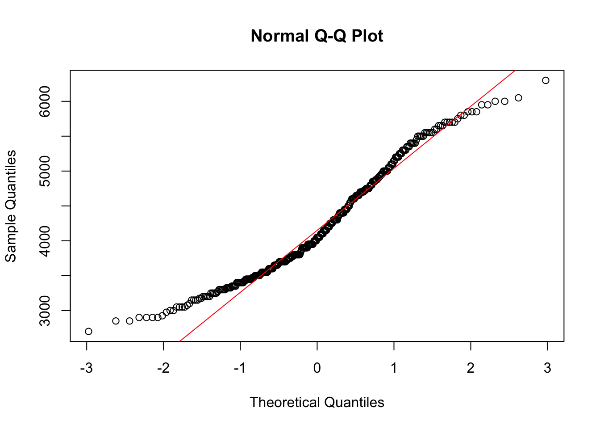
Looks like for the most part as the carat value increases so does price. That makes sense.
ggplot With ggplot we specify both the x and y variables, and add a point.
ggplot(dsmall, aes(x=carat, y=price)) + geom_point()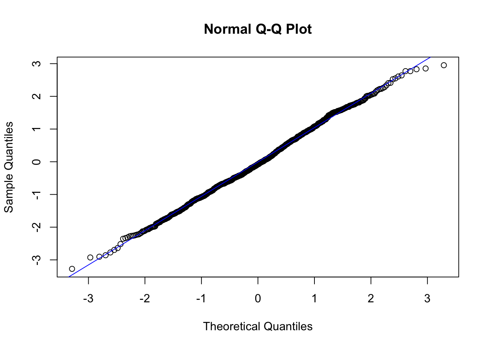
Other Resources
- http://www.statmethods.net/graphs/scatterplot.html
- https://www.r-bloggers.com/scatterplot-matrices/
2.4.3.2 Adding lines to the scatterplots
Two most common trend lines added to a scatterplots are the “best fit” straight line and the “lowess” smoother line.
base The best fit line (in blue) gets added by using the abline() function wrapped around the linear model function lm(). Note it uses the same model notation syntax and the data= statement as the plot() function does. The lowess line is added using the lines() function, but the lowess() function itself doesn’t allow for the data= statement so we have to use $ sign notation.
plot(price~carat, data=dsmall)
abline(lm(price~carat, data=dsmall), col="blue")
lines(lowess(dsmall$price~dsmall$carat), col="red")
ggplot With ggplot, we just add a geom_smooth() layer.
ggplot(dsmall, aes(x=carat, y=price)) + geom_point() + geom_smooth() `geom_smooth()` using method = 'gam' and formula = 'y ~ s(x, bs = "cs")'
Here the point-wise confidence interval for this lowess line is shown in grey. If you want to turn the confidence interval off, use se=FALSE. Also notice that the smoothing geom uses a different function or window than the lowess function used in base graphics.
Here it is again using the ggplot plotting function and adding another geom_smooth() layer for the lm (linear model) line in blue, and the lowess line (by not specifying a method) in red.
ggplot(dsmall, aes(x=carat, y=price)) + geom_point() +
geom_smooth(se=FALSE, method="lm", color="blue") +
geom_smooth(se=FALSE, color="red")`geom_smooth()` using formula = 'y ~ x'
`geom_smooth()` using method = 'gam' and formula = 'y ~ s(x, bs = "cs")'
2.4.3.3 Line plots
Line plots connect each dot with a straight line. This is most often done when measuring trends of the response as the value of x increases (such as a time series)
We saw earlier that carat and price seemed possibly linear. Let see how the average price changes with carat.
library(dplyr)
price.per.carat <- dsmall %>% group_by(carat) %>% summarise(mean = mean(price))base For base graphics, type=‘b’ means both points and lines, ‘l’ gives you just lines and ‘p’ gives you only points. You can find more plotting character options under ?pch.
plot(mean~carat, data=price.per.carat, type='l')
ggplot With ggplot we specify that we want a line geometry only.
ggplot(price.per.carat, aes(x=carat, y=mean)) + geom_line()
How does this relationship change with cut of the diamond? First lets get the average price per combination of carat and cut.
ppc2 <- dsmall %>% group_by(cut, carat) %>% summarise(mean = mean(price))`summarise()` has grouped output by 'cut'. You can override using the `.groups`
argument.base This plot can be created in base graphics, but it takes an advanced knowledge of the graphics system to do so. So I do not show it here.
ggplot This is where ggplot starts to excel in it’s ease of creating more complex plots. All we have to do is specify that we want the lines colored by the cut variable.
ggplot(ppc2, aes(x=carat, y=mean, col=cut)) + geom_line()
And we get one line per cut.
2.4.4 Continuous v. Categorical
Create an appropriate plot for a continuous variable, and plot it for each level of the categorical variable.
2.4.4.1 Dotplot/strip chart
Dotplots can be very useful when plotting dots against several categories. They can also be called stripcharts.
base
stripchart(carat ~ cut, data=dsmall)
Doesn’t look to pretty, but kinda gets the point across. Few fair quality diamonds in the data set, pretty spread out across the carat range except one high end outlier.
ggplot We can reproduce the same thing by plotting one continuous variable against one categorical variable, and adding a layer of points. I’d argue that horizontal looks better due to the axis-labels.
library(gridExtra)
Attaching package: 'gridExtra'The following object is masked from 'package:dplyr':
combinea <- ggplot(dsmall, aes(y=carat, x=cut)) + geom_point()
b <- ggplot(dsmall, aes(y=cut, x=carat)) + geom_point()
grid.arrange(a, b, ncol=2)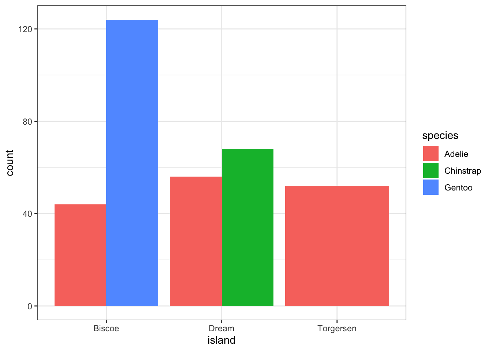
2.4.4.2 Grouped boxplots
base Base graphics plots grouped boxplots with also just the addition of a twiddle (tilde) ~. Another example of where model notation works.
boxplot(carat~color, data=dsmall)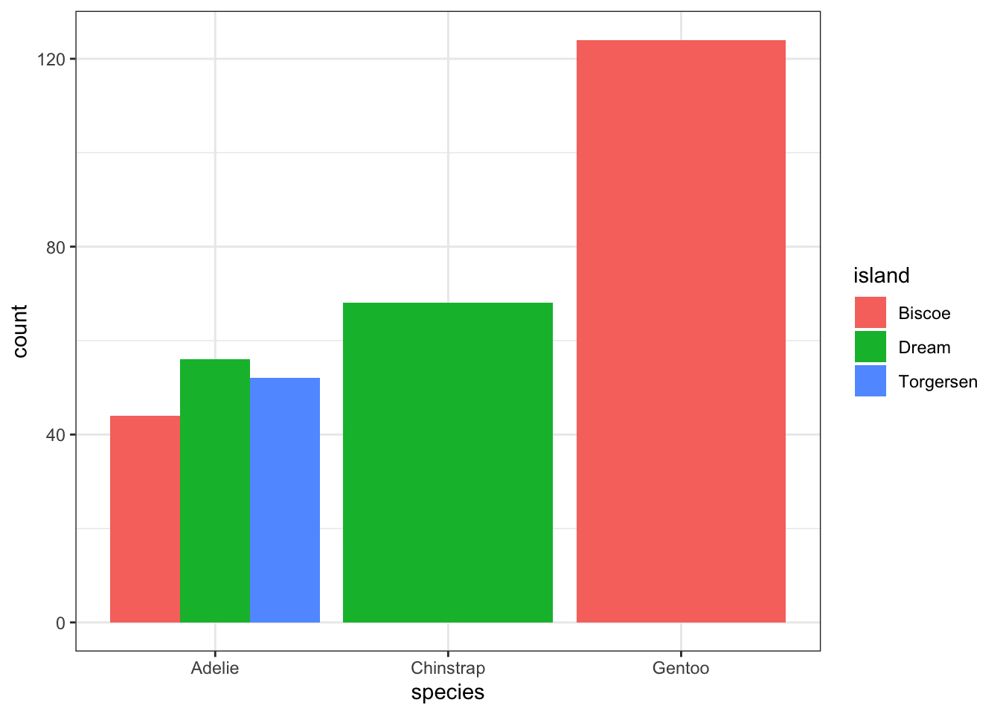
ggplot A simple addition, just define your x and y accordingly.
ggplot(dsmall, aes(x=color, y=carat, fill=color)) + geom_boxplot()
Adding violins Violin plots can be overlaid here as well.
ggplot(dsmall, aes(x=color, y=carat, fill=color)) +
geom_violin(alpha=.1) +
geom_boxplot(alpha=.5, width=.2)
2.4.4.3 Grouped histograms
base There is no easy way to create grouped histograms in base graphics we will skip it.
ggplot By default ggplot wants to overlay all plots on the same grid. This doesn’t look to good with histograms. Instead you can overlay density plots
a <- ggplot(dsmall, aes(x=carat, fill=color)) + geom_histogram()
b <- ggplot(dsmall, aes(x=carat, fill=color)) + geom_density()
grid.arrange(a,b, ncol=2)`stat_bin()` using `bins = 30`. Pick better value with `binwidth`.
The solid fills are still difficult to read, so we can either turn down the alpha (turn up the transparency) or only color the lines and not the fill.
c <- ggplot(dsmall, aes(x=carat, fill=color)) + geom_density(alpha=.2)
d <- ggplot(dsmall, aes(x=carat, col=color)) + geom_density()
grid.arrange(c,d, ncol=2)
2.4.5 Joy plots / Ridgelines
Somewhat new (2017), joylines have not been added to the base distribution of ggplot2 yet. For now it’s available in the ggjoy package. Really good way to visualize density plots without the overlapping issue.
library(ggjoy)Loading required package: ggridgesThe ggjoy package has been deprecated. Please switch over to the
ggridges package, which provides the same functionality. Porting
guidelines can be found here:
https://github.com/clauswilke/ggjoy/blob/master/README.mdggplot(dsmall, aes(x=carat, y=color)) + geom_joy()Picking joint bandwidth of 0.165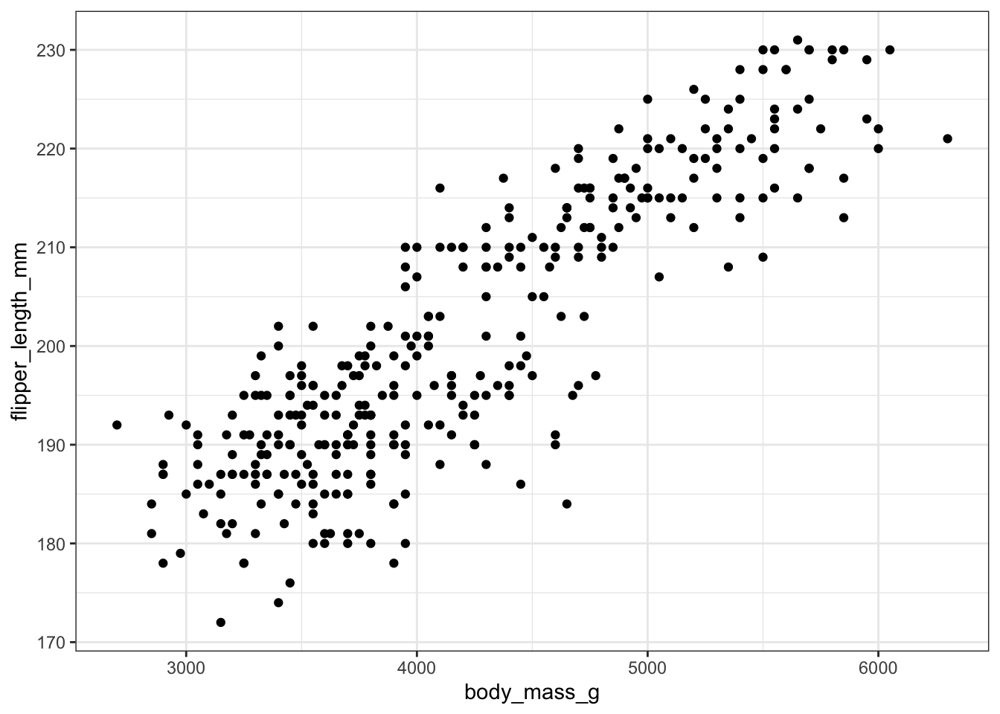
2.5 Faceting / paneling
This is a good place to introduce a term called faceting. The definition is a particular aspect or feature of something, or one side of something many-sided, especially of a cut gem. Basically instead of plotting the grouped graphics on the same plotting area, we let each group have it’s own plot, or facet.
We add a facet_wrap() and specify that we want to panel on the color group. Note the twiddle in front of color.
ggplot(dsmall, aes(x=carat, fill=color)) + geom_density() + facet_wrap(~color)
The grid placement can be semi-controlled by using the ncol argument in the facet_wrap() statement.
ggplot(dsmall, aes(x=carat, fill=color)) + geom_density() + facet_wrap(~color, ncol=4)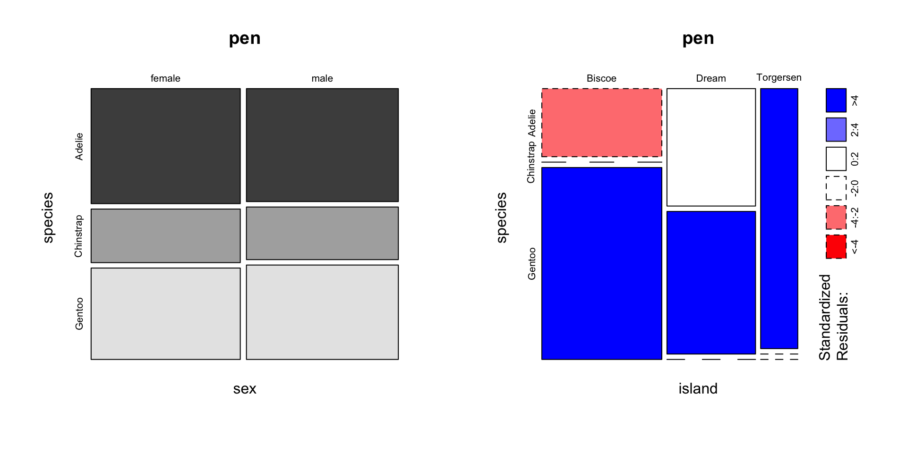
It is important to compare distributions across groups on the same scale, and our eyes can compare items vertically better than horizontally. So let’s force ncol=1.
ggplot(dsmall, aes(x=carat, fill=color)) + geom_density() + facet_wrap(~color, ncol=1)
2.6 Multiple plots per window
base I use par(mfrow=c(r,c)) for base graphics, where r is the number of rows and c the number of columns.
par(mfrow=c(1,3))
plot(dsmall$carat)
plot(dsmall$color)
plot(dsmall$price ~ dsmall$carat)
Other resources including learning about layouts. Multipanel plotting with base graphics http://seananderson.ca/courses/11-multipanel/multipanel.pdf
ggplot Use the grid.arrange function in the gridExtra package. I’ve done it several times above. You assign the output of a ggplot object to an object (here it’s plot1 and plot2). Then you use grid.arrange() to arrange them either side by side or top and bottom.
a <- ggplot(dsmall, aes(x=carat, fill=color)) + geom_density(alpha=.2)
b <- ggplot(dsmall, aes(x=carat, col=color)) + geom_density()
grid.arrange(a,b, ncol=2)
2.7 Multivariate (3+ variables)
This is not much more complicated than taking an appropriate bivariate plot and adding a third variable through paneling, coloring, or changing a shape.
This is trivial to do in ggplot, not trivial in base graphics. So I won’t show those examples.
2.7.1 Three continuous
Continuous variables can also be mapped to the size of the point. Here I set the alpha on the points so we could see the overplotting (many points on a single spot). So the darker the spot the more data points on that spot.
ggplot(dsmall, aes(x=carat, y=price, size=depth)) + geom_point(alpha=.2)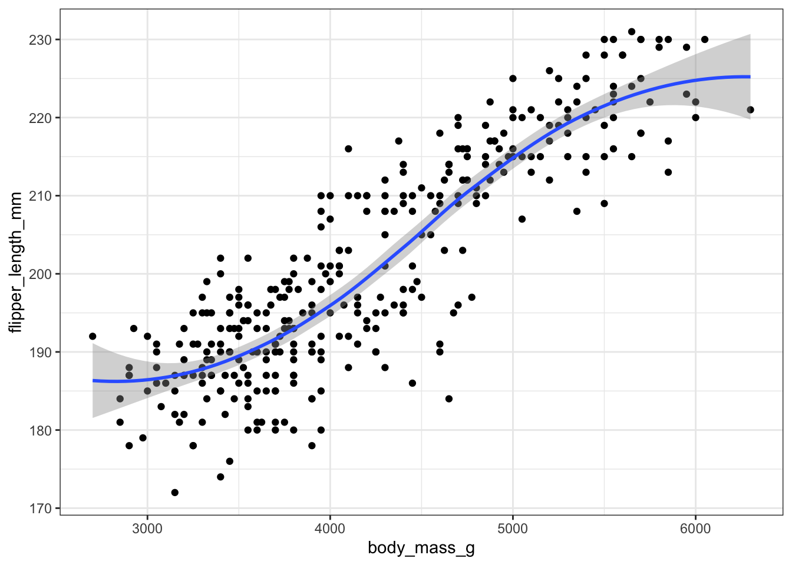
2.7.2 Scatterplot matrix
A scatterplot matrix allows you to look at the bivariate comparison of multiple pairs of variables simultaneously. First we need to trim down the data set to only include the variables we want to plot, then we use the pairs() function.
c.vars <- dsmall[,c('carat', 'depth', 'price', 'x', 'y', 'z')]
pairs(c.vars)
We can see price has a non-linear relationship with X, Y and Z and x & y have a near perfect linear relationship.
2.7.3 Two categorical and one continuous
This is very similar to side by side boxplots, one violin plot per cut, within each level of color. This is difficult to really see due to the large number of categories each factor has.
ggplot(dsmall, aes(x=color, y=price, fill=cut)) + geom_violin()
Best bet here would be to panel on color and change the x axis to cut.
ggplot(dsmall, aes(x=cut, y=price, fill=cut)) + geom_violin() + facet_wrap(~color)
2.7.4 Two continuous and one categorical
a <- ggplot(dsmall, aes(x=carat, y=price, color=cut)) + geom_point() + ggtitle("Colored by cut")
d <- ggplot(dsmall, aes(x=carat, y=price, color=cut)) + geom_point() +
geom_smooth(se=FALSE) +ggtitle("Lowess line per cut")
grid.arrange(a, d, nrow=1)`geom_smooth()` using method = 'loess' and formula = 'y ~ x'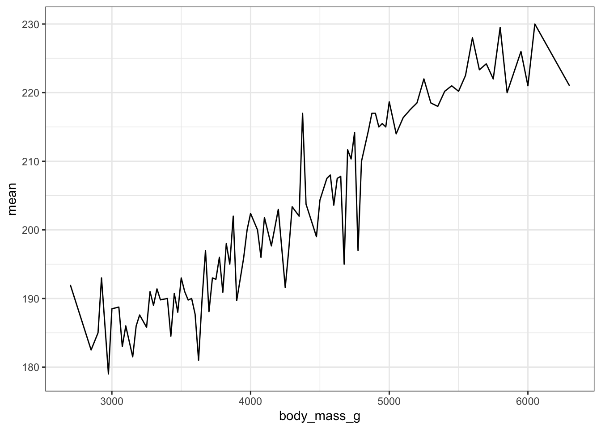
Change the shape
ggplot(dsmall, aes(x=carat, y=price, shape=cut)) + geom_point() + ggtitle("Shape by cut")Warning: Using shapes for an ordinal variable is not advised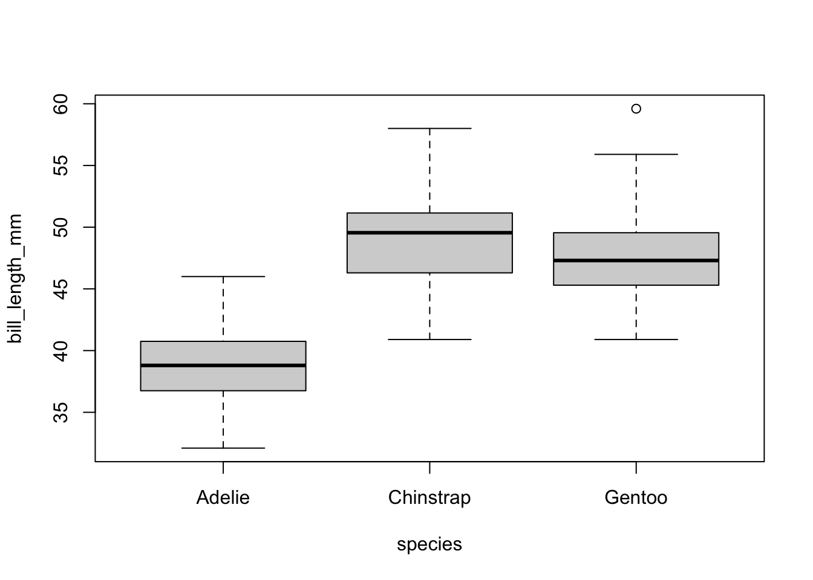
Or we just panel by the third variable
ggplot(dsmall, aes(x=carat, y=price)) + geom_point() + facet_wrap(~cut)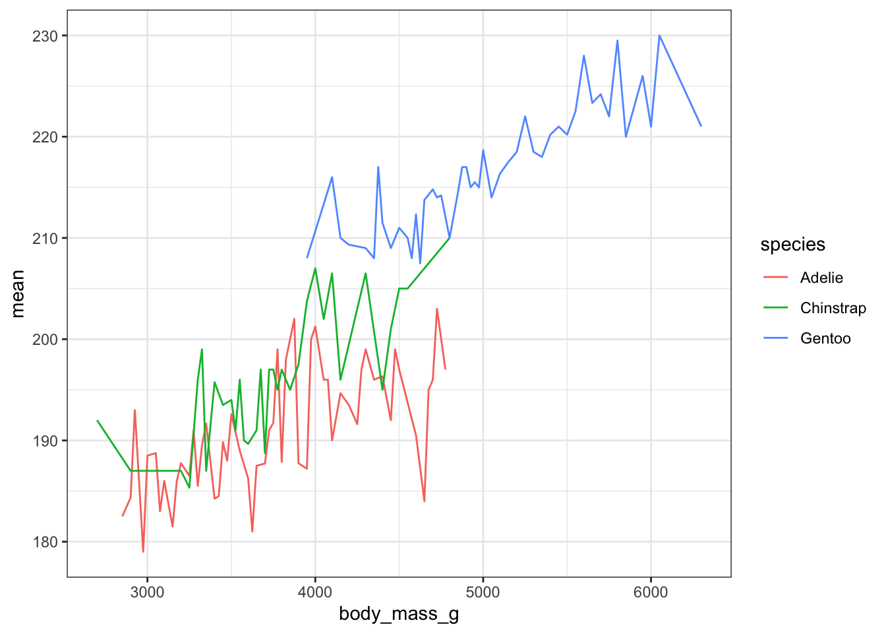
2.8 Paneling on two variables
Who says we’re stuck with only faceting on one variable? A variant on facet_wrap is facet_grid. Here we can specify multiple variables to panel on.
ggplot(dsmall, aes(x=carat, fill=color)) + geom_density() + facet_grid(cut~color)
How about plotting price against caret, for all combinations of color and clarity, with the points further separated by cut?
ggplot(dsmall, aes(x=carat, y=price, color=cut)) + geom_point() + facet_grid(clarity~color)
And lastly let’s look back at how we can play with scatterplots of using a third categorical variable (using ggplot2 only). We can color the points by cut,
ggplot(dsmall, aes(x=carat, y=price, color=cut)) + geom_point()
We could add a smoothing lowess line for each cut separately,
ggplot(dsmall, aes(x=carat, y=price, color=cut)) + geom_point() + geom_smooth(se=FALSE)`geom_smooth()` using method = 'loess' and formula = 'y ~ x'
We could change the color by clarity, and shape by cut.
ggplot(dsmall, aes(x=carat, y=price, color=clarity, shape=cut)) + geom_point() Warning: Using shapes for an ordinal variable is not advised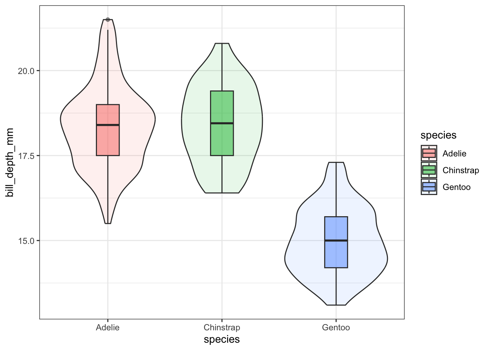
That’s pretty hard to read. So note that just because you can change an aesthetic, doesn’t mean you should. And just because you can plot things on the same axis, doesn’t mean you have to.
Before you share your plot with any other eyes, always take a step back and try to explain what it is telling you. If you have to take more than a minute to get to the point then it may be too complex and simpler graphics are likely warranted.
2.9 Troubleshooting
Problem: Missing data showing up as a category in ggplot?
Get rid of that far right bar!
ggplot(NCbirths, aes(x=marital)) + geom_bar()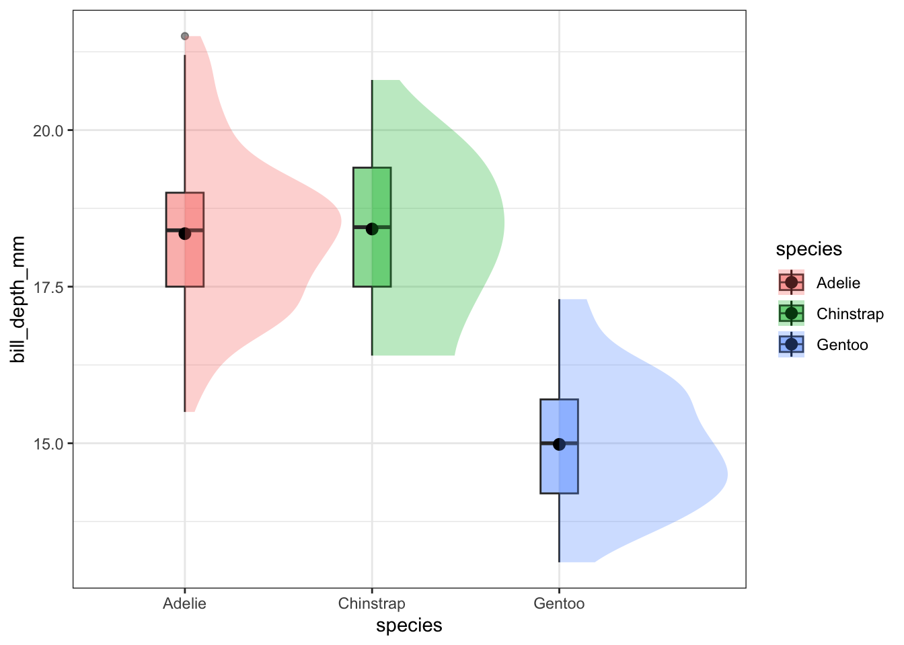
Solution: Use dplyr to select only the variables you are going to plot, then pipe in the na.omit() at the end. It will create a temporary data frame (e.g) plot.data that you then provide to ggplot().
plot.data <- NCbirths %>% select(marital) %>% na.omit()
ggplot(plot.data, aes(x=marital)) + geom_bar()
Problem: Got numerical binary 0/1 data but want to plot it as categorical? > Other related error messages: > * Continuous x aesthetic – did you forget aes(group=…)?
Consider a continuous variable for the number of characters in an email num_char, and a 0/1 binary variable spam.
Solution: Create a second variable var_factor for plotting and keep the binary var as 0/1 for analysis.
email$spam_cat <- factor(email$spam, labels=c("Ham", "Spam"))
ggplot(email, aes(y=num_char, x=spam_cat)) + geom_boxplot()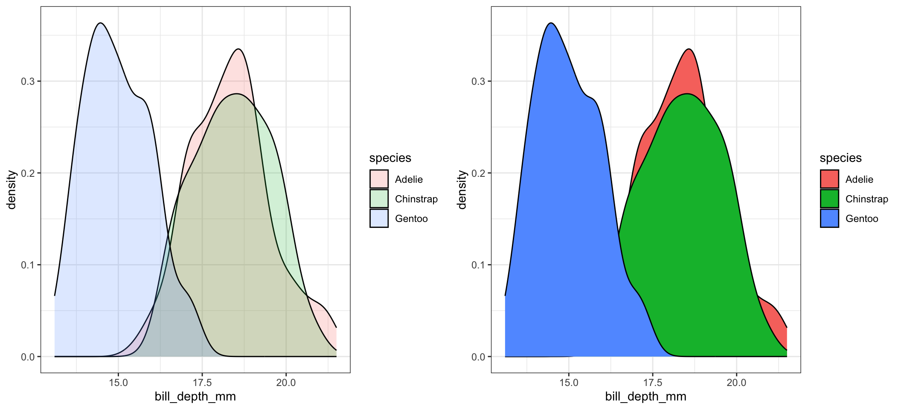
Problem: You want to change the legend title for a fill or color scale.
Solution: Add the name= argument to whatever layer you added that created the legend. Here I speciefied a fill, and it was a discrete variable. So I use the scale_fill_discrete() layer.
ggplot(email, aes(y=num_char, x=spam_cat, fill=spam_cat)) + geom_boxplot() +
scale_fill_discrete(name="Ya like Spam?")
Here, I colored the points by a discrete variable, so the layer is scale_color_discrete().
ggplot(email, aes(x=num_char, y=line_breaks, col=spam_cat)) + geom_point() +
scale_color_discrete(name="Ya like Spam?")
Problem: You want to add means to boxplots. Boxplots are great. Even better with violin overlays. Know what makes them even better than butter? Adding a point for the mean. stat_summary is the layer you want to add. Check out this stack overflow post for more context.
ggplot(email, aes(x=spam_cat, y=num_char, fill=spam_cat)) +
geom_boxplot() +
stat_summary(fun.y="mean", geom="point", size=3, pch=17,color="blue")Warning: The `fun.y` argument of `stat_summary()` is deprecated as of ggplot2 3.3.0.
ℹ Please use the `fun` argument instead.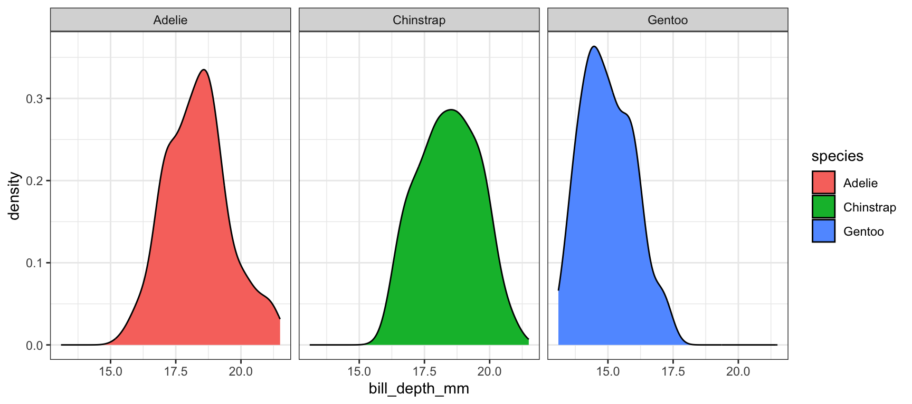
I suggest playing around with size and plotting character pch to get a feel for how these work. You can also look at ?pch (and scroll down in the help file) to see the 25 default plotting characters.
2.10 But what about…
- Legend adjustment: remove it, move it to another side, rename it
- Custom specified colors and shapes
Go here http://www.cookbook-r.com/Graphs/ for these.
2.10.1 Other plots not mentioned
- Heat maps https://www.r-bloggers.com/how-to-make-a-simple-heatmap-in-ggplot2/
- Word clouds https://rpubs.com/brandonkopp/creating-word-clouds-in-r , simpler: http://dangoldin.com/2016/06/06/word-clouds-in-r/
- Interactive plots - Look into
plotly()andggplotly() - the circle type plots
2.11 Additional Resources
For any Google Search - be sure to limit searches to within the past year or so. R packages get updated very frequently, and many functions change or become obsolete.
- R Graphics: https://www.stat.auckland.ac.nz/~paul/RGraphics/rgraphics.html The best book about using base graphics
- R Graphics Cookbook: http://www.cookbook-r.com/Graphs/ or http://amzn.com/1449316956 The best book for using ggplot2
- STHDA: Statisical tools for high-throughput data analysis. http://www.sthda.com/english/
- Quick-R: Basic Graphs
- Quick-R: ggplot2
- Books
- ggplot2 http://ggplot2.org/book/ or http://amzn.com/0387981403
- qplot http://ggplot2.org/book/qplot.pdf
- Help lists
- ggplot2 mailing list http://groups.google.com/group/ggplot2
- stackoverflow http://stackoverflow.com/tags/ggplot2
- Chico R users group